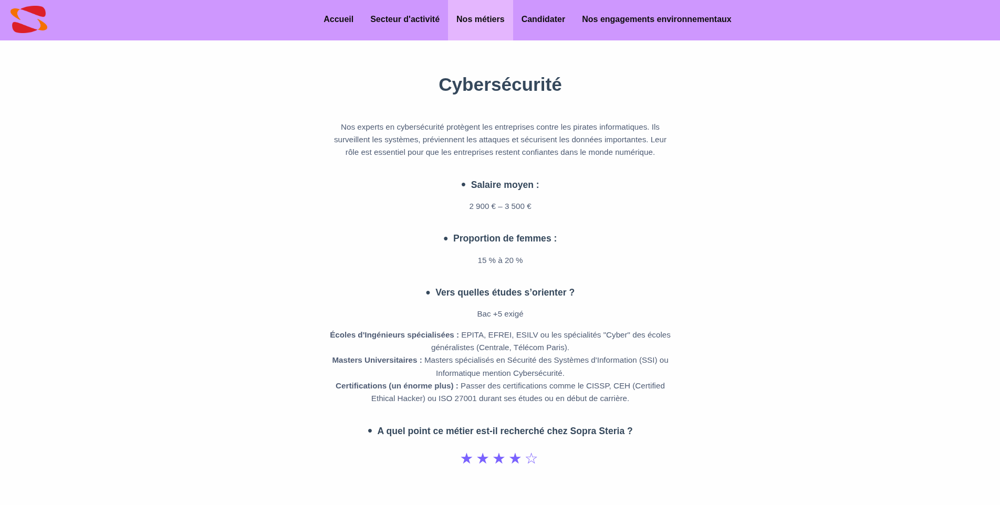
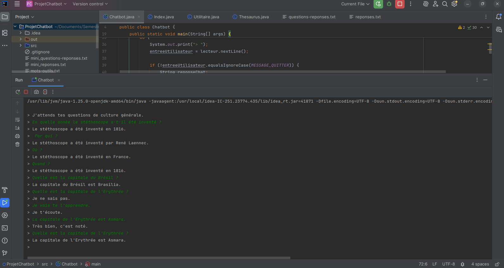
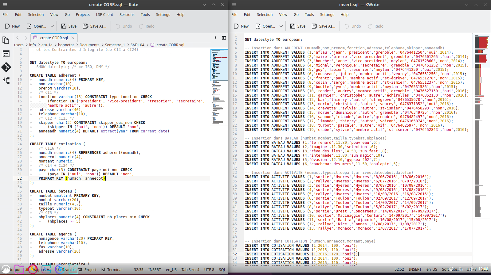
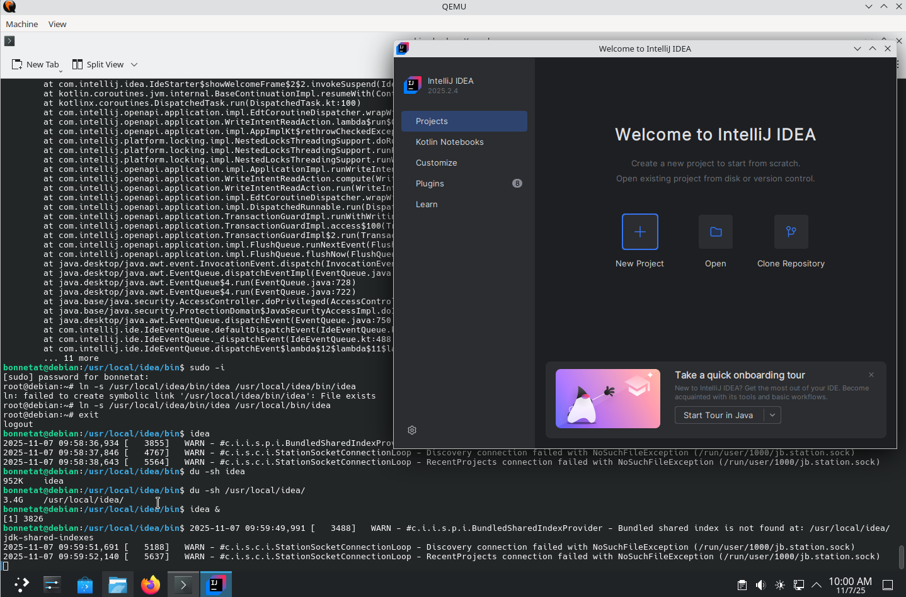

Site Web Sopra Steria
Objectif
Créer un site web permettant à des élèves de 3ème d'effectuer une demande de stage au sein de l'entreprise Sopra Steria.
Description
Site multi-pages présentant les secteurs d'activités de l'entreprise, les métiers disponibles, les engagements environnementaux ou encore une page pour candidater. Réalisé au sein d'un groupe de 5 étudiants sur une durée de 3 mois en parallèle des cours, ce projet devait impérativement intégrer les enjeux de la transition numérique et écologique
Ma part
J'ai notamment développé la structure HTML et le style CSS de la page nos métiers. J'ai aussi aidé le groupe à la conception de la maquette.

Créer un ChatBot
Objectif
Créer une intelligence artificielle capable de répondre aux questions de culture générale posées par l'utilisateur.
Description
Le système recueille les mots-clés de la question posée et effectue une recherche dans un large fichier texte pour identifier les réponses correspondantes. Ce projet a été réalisé en binôme sur une durée d'une semaine.
Ma part
Avec mon partenaire, nous avons réparti le code en deux parties égales tout en collaborant étroitement, car nous utilisions des systèmes de fonctions similaires.

Requêtes & Bases de Données
Objectif
Créer des tables structurées et manipuler les données via des requêtes complexes.
Description
Réalisation d'un large panel de requêtes SQL pour extraire et gérer l'information efficacement. Ce projet a été réalisé à 2 et étalé sur une durée d'une semaine.
Ma part
Le travail de rédaction des requêtes a été réparti équitablement au sein de l'équipe pour couvrir l'ensemble des besoins d'affichage et de mise à jour.

Administrer Une Machine Virtuelle
Objectif
Maîtriser l'installation d'un système d'exploitation complet sur un environnement virtuel.
Description
Installation de Debian 12 et configuration avancée des options système selon des objectifs précis. Ce projet a été réalisé de manière individuelle avec un décompte d'une semaine pour sa finalisation. Je devais donc administer un système et gérer le déploiement de logiciels via différents gestionnaires de paquets comme apt, snap ou flatpak.
